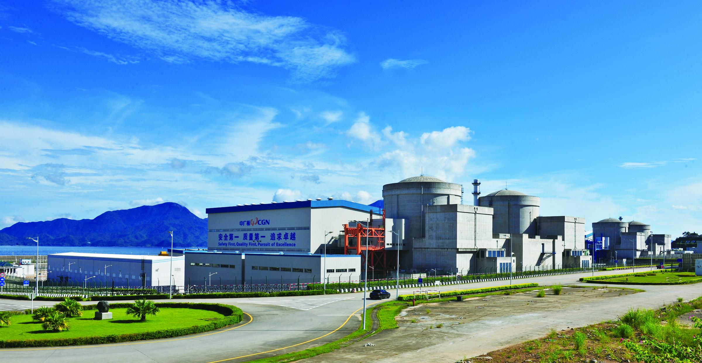

地理位置
中国广东省深圳市大鹏新区大鹏半岛
核电厂历史
一期1号机组于1997年始建，于2002年并网成功并在同年正式商转；
一期2号机组于1997年始建，于2002年并网成功并在次年正式商转；
二期1号机组于2005年始建，于2010年并网成功并在同年正式商转；
二期2号机组于2006年始建，于2011年并网成功并在同年正式商转。
堆形与数量
截止2024年11月，岭澳核电厂有2台运行中的M310型号压水堆（一期1，2号）以及2台运行中的的CPR1000型号压水堆（二期1，2号）。
发电基本原理
压水堆（Pressurized Water Reactor）是采用高压水来冷却核燃料的一种反应堆，其工作原理为：主泵将120～160个大气压的一回路冷却水送入堆芯，把核燃料放出的热能带出堆芯，而后进入蒸汽发生器， 通过传热管把热量传给二回路水，使其沸腾并产生蒸汽，常在一回路水中加入硼酸，用以控制反应性的慢变化。之后，二回路产生的高压蒸汽会推动汽轮机发电，再经过冷凝器和预热器进入蒸汽发生器，完成二回路水循环。 压水堆的工作原理图如下所示：

图1：压水堆示意图
荣誉与贡献
自1994年首台机组投入商业运行以来，大亚湾核电基地持续保持安全稳定运行，运营业绩稳居国际核能领域第一方阵。根据世界核营运者协会（WANO）的评估，2016年基地六台机组中72项指标有43项达到世界前1/10水平， 卓越率达59.7%。其中，岭澳一期1号机组连续安全运行4146天，位居全球第一，大亚湾2号机组以3026天排名第三，显示出卓越的管理和技术水平。作为粤港两地的重要清洁电力供应基地，截至2017年6月底，六台机组累计上 网电量达6406.16亿度，其中供港电量2299.42亿度，占香港用电量的四分之一，供粤电量约占广东用电量的十分之一，为区域经济发展和绿色能源转型提供了强有力支持。
图3：岭澳核电厂全景
截至2023年3月，岭澳核电厂1号机组已实现连续安全运行约多少天？
参考文献
1. 俞冀阳.核工程基本原理.北京：清华大学出版社，2018
2. 俞冀阳.核电厂系统与运行.北京：清华大学出版社，2016
3. 2024年中国核电行业研究报告，2024
4. 中国广核电力股份有限公司网页
5. 中国核安全局网页